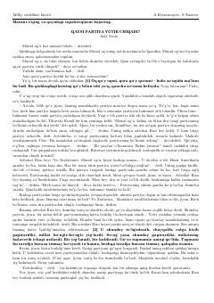

QPSiyosiy vaʼdalar va saylovoldi oʻyinlari haqidagi oʻtkir hajviy hikoya.
Aziz Nesinning ushbu hajviy hikoyasida saylovoldi vaʼdalari va siyosiy partiyalarning xalqni aldash usullari qishloq hayoti misolida kulgili tarzda tasvirlanadi. Asar siyosiy populizm va jamiyatdagi oʻzgaruvchan qarashlarni oʻtkir satira ostiga oladi.